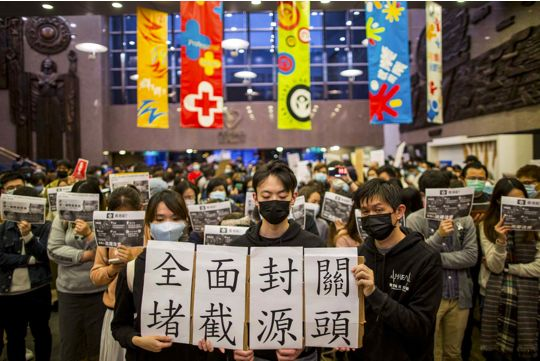
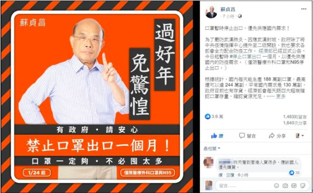

没有人想做这座英雄城市的“城市英雄” - 经济观察网 － 专业财经新闻网站
原文链接 备份链接 陈润/文 一 从2020年1月15日回武汉至今，我在武汉整整呆了24天。这是我自大学毕业以来在武汉呆得最久的一段时间，也是自去年家人搬回武汉陪伴最长的一段日子，更是我人生至今最困难悲伤的一段岁月。 一切都因新型冠状病毒 …

Coronavirus COVID-19 Global Cases
by Johns Hopkins CSSE
上一期特稿中，我们看到了疫情对人们的生活造成的影响。病毒逐步扩散至世界各地的同时，与疫情相关的种种事件也占据着各大媒体的头条。令人失望的武汉红十字会，感染人数剧增的“钻石公主号”邮轮，要求港府闭关的“医护罢工”运动，还有各种形式的“反歧视”活动，无不牵动着人们的心绪，酝酿着不安或焦虑。
当事件爆发时，媒体在以何种形式在塑造我们对疫情的感知，新闻报道之外，又有着哪些我们视线所不能及的真实？本期围炉特稿，我们试图借世界各地大学生的视角，对这些事件进行重新审视。
感谢所有受访者的参与，篇幅所限，仅摘录部分内容。
1
日本

2月16日，日本厚生劳动大臣加藤胜信在NHK的节目上表示，“以疫情蔓延为前提的因应对策有其必要”。（腾讯新闻）
（图源：ANN Abema news）
#钻石公主号邮轮
2月22日，加藤胜信在记者会上透露，在“钻石公主”号邮轮的已下船人员中，有23人自2月5日隔离开始后，从未接受过新冠病毒检测。（澎湃新闻）
2月5日，日本厚生劳动省公布，确认目前停泊在横滨港外海的大型游轮“钻石公主”号内，发生新型冠状病毒肺炎集体感染（10名）。（财新）
#口罩捐赠
截至2月7日，中国驻日本大使馆披露，据不完全统计，日本国内各界累计捐赠防护口罩633.8万余个、手套104.7万余副，累计捐款约合3060.2万人民币（BBC）
Nayu，日本学生
（原文日文，中文由采访者翻译）
我非常支持之前口罩捐赠这个做法，虽然日本现在也已经很难买到口罩了，但在最紧急的时刻能将口罩送到有需要的中国人手上真的太好了。不过实话说，我觉得日本政府的相关对策和措施太晚了。2个月以前就在中国开始流行的新冠病毒，日本政府直到最近才意识到这个病毒真的很危险，并采取相应紧急的对策。钻石公主号上的很多事情我觉得政府没有公开，非常不透明。比如起初安倍宣布船上不用全员检验，到后来很多人下船后各自乘坐公共交通回家，最近甚至还发现漏了23个人没检验这些事情，我真的不知道日本政府有没有认真地在处理这件事。
弥生，日本学生
（原文日文，中文由采访者翻译）
个人认为若不是政府暧昧的政策，也不会造成现在日本很多地方仍难以确诊新型冠状病毒，或明明已经出现相关症状却仍在公司工作的职员的情况。关于钻石公主号邮轮，日本政府做出船上全员需接受检测这个决策時，已经太晚了。因为病毒早已开始蔓延了，这间接地造成了邮轮上被感染的人数越来越多，且逐渐无法控制的局面。
Helen，中国留学生
日本这次确实让我挺感动的。除了日本政府的捐赠，民间也有很多力量在为武汉筹备物资或者善款。我身边的日本人也都对武汉特别关心，无论是给我发的邮件还是现实中的对话，他们会很注意自己的措辞，在关心你的同时也不会给你造成压力。我听最近去过邮局的朋友说，邮局老爷爷听说是寄中国的，并没有直接地使用“肺炎”和”病毒”一类的词，只说是病気（生病）。

图为受访者受到的邮件，已隐去个人相关信息。邮件中没有直接提及新型冠状肺炎，而是使用了大変な事（非常严重的事）、つらい状況（糟糕的情况）来描述此次疫情。
（图源：受访者）
1.你好：
我了解了武汉的现状之后非常担心，你的家人朋友都还好吗？
有没有什么感到麻烦的地方呀？
2.最近身体还好吗？
武汉最近发生了一些严重的事情，你的家人们都还好吧？
父母、叔叔阿姨还有堂兄弟姐妹都没事吧？

（图源：CGTN 视频截图）
2
美国&欧洲
#ImNotAVirus
2月3日，中国驻英国使馆提醒在英中国公民妥善应对不良分子挑衅。（中国驻英大使馆微信）
2月2日，意大利街头，华裔青年Massi发起了“我不是病毒”的行为艺术。（凤凰网）
石头，在美国上学的中国留学生
在美国，我身边的同学大多很理解这次人们对疫情的认知是媒体塑造来的。社交媒体上既有关于限制人权相关的话题，也流传着关于“中国十天之内建成一座医院”、“多地封城，民众配合公卫机构”等等强调国内采取举措的影像。但这也仅限我接触到的一群同学们。
要说起来对华人的敌意，我最初得到这样的信息并不是来自于英文媒体或是同学间的群聊，而是一些像留学导向的公众号等等用煽动性的言语行文的微信自媒体。
其实这时候，对于疫情的恐惧又与本地社会“政治正确”、尊重多元的导向咬合在一起。在这学期刚到纽约的第一节课上，我的一个教授会对全班同学讲“恐惧亚裔同学本身便是种族歧视”，而这样的课堂讨论要远远早于社交媒体上流出的“歧视亚裔”一类的消息。现在社交媒体上，关于#ImNotAVirus (我不是病毒) 的hashtag正在被广泛关注，越来越多的行动主义正在发生。这时候，疫情仅仅是一个借口，让那些本身有歧视其它社群想法的人将自己的言论合理化，是为了佐证他们自己世界观的注脚。疫情的出现，其实是在加强着这种观点，而这并不是一个好的态势。
Allison Pao，美国学生，现居美国波士顿
对于疫情的信息我是从新闻上看到的，主要是《纽约时报》和《华盛顿邮报》的报道。当然，我的朋友和家人也会和我分享其他关于疫情的信息。
我觉得因为此次疫情而产生的歧视性行为体现出很多人对中国的无知。我认为因为疫情而歧视中国人和华裔美国人是完全无法让人接受的。我觉得疫情给了很多人一个表达对中国种族歧视的借口。我也认为很多人觉得受到了中国经济崛起的威胁，这使得种族歧视的现象更加恶化。
Kangxin，华裔西班牙人，现居英国伦敦
对于这次疫情我主要是从BBC（英国广播公司）获得相关信息的，当然国内的微博我也看。
我觉得媒体（西方媒体）对这次事件的报道绝对是有夸张化的，有时候他们会谎报国内疫情的数目，而且这样的谎报影响还是挺大的。我有很多朋友刚从媒体听说病情的时候会觉得事情很严重，就好像伦敦也要“陷落”了。
对华人群体的歧视在我的学校之前已经发生过了，虽然我本人还没有见过或经历过。我听说有些中国学生带着口罩走进校园时，旁边的其他国家的学生会嘀咕：“他们是中国学生，我们离他们远一点。”，我觉得这很不可思议。即便并不是所有人都会做出这样的歧视行为，但是我听到这样的事情之后依然会很难过。

国务院总理李克强亲临武汉指导控制疫情
（图源：谷歌）
3
中国大陆
#红十字会
2月1日，央视新闻探访红十字会。记者试图探访仓库物资分发处受到保安阻拦，交涉过程中直播被切断。采访过程得知协和医院一个科室只有4个N95口罩。（综合新浪微博信息，湖北/武汉红十字会云监工平台）
#武汉政府应对措施
1月23日武汉政府宣布，为有效抗击新型冠状病毒疫情，参照北京小汤山医院模式，武汉市开建专门医院，通称为火神山医院，用于收治新型冠状病毒肺炎患者。（第一财经）
1月23日凌晨，武汉发布消息“封城”。10时，关闭离汉通道，但民间报道高速仍可通行。
Bryan Bai，武汉学生，现居武汉
首先，我想说这次舆论监督的作用真的发挥得很彻底。红十字会事件一开始的时候，我们真的很着急，但是当看到舆论的监督真的可以起到一定的作用时，也觉得很震撼。
在我个人看来，提早公布人传人并且没有早点封城这样的决策，不是一个市级政府不承担任何后果就能做出的，他们也要等待中央政府的决定。武汉市政府并不是像外界所说的“十恶不赦”的，他们也在做好自己的本分。
对于处理疫情过程中又暴露出的很多问题，我们也比较痛恨。政府可能担心引起恐慌，不愿透露真实情况，但其实政府现在更应该做的是公布最真实的情况，并且政府平时本身就应该做好应急备案。
Susan，在武汉上学的上海学生
如果媒体一开始就真实报道的话，现在事件可能会好很多。当时媒体上说不存在人传人，这使得很多人都放松警惕了。我1月13号乘飞机回上海，因为有医学部同学的消息，我全程都带着口罩，但当时机上几乎没有人戴口罩。后来报道的很多传染案例，就是在一月十几号的时候，那个时候很多人都不重视。
武汉政府前期措施肯定是不太好的，尤其是医护人员感染了很久之后才被官方报道出来。华南海鲜市场知道1月1号才关闭，但是官方也没有提醒公众注意，而且在封城之前还在举行万人聚会，要是能早点采取措施的话，肯定会减少感染者的人数。
后期采取的措施还是不错的，建造火神山和雷神山医院都是很不错的。而且，现在也出台了很多照顾医务人员子女的政策。
Amen Tesfaye，在中国上学的埃塞俄比亚学生
（原文英文，中文由采访者翻译）
尽管批评中国政府缺乏透明度和压制试图向人们通报病毒的医疗专业人员是可以理解的，但同样可以肯定的是，中国政府采取了强有力的行动来阻止疾病的进一步传播，比如在6天内建一所医院。从某种程度上来说，我理解中国政府维持社会秩序的动机，尤其是在中国这样的人口大国中非常重要。但我绝对不同意掩盖真相，并将整个疫情归咎于地方官员，因为武汉/湖北官员完全受中央政府控制。
4
香港地区

（图源：端传媒）
#医护罢工
2月1日，医管局员工阵线通过发起罢工。2月3日发起第一阶段罢工，由于政府不回应诉求，他们由2月4日至2月7日放起第二阶段罢工，第二阶段罢工首天，工会表示有超过7,000人参与，医管局表示有5,000人缺勤。（维基百科）
#港府应对
2月5日港府宣布，自2月8日起所有从内地入境的人士，无论内地人、港人还是外国人，均须要强制检疫14日；当晚医务亦投票通过搁置第二阶段罢工，封关变相成事，罢工亦以一人一票的方式和平落幕。
Heisenberg，香港本地学生
我對於港府本身對於此次事件的相關措施是非常不滿意的。香港作爲國際都市，人流來自四面八方，當早在一月份已經表達對這次疫情高度重視，甚至在近幾個星期出現本地案例的情況下，封關無論對於防止本地社區内進一步傳播，還是對於改善本地醫療系統的負荷而言都是有幫助的。而政府陸續提出的所謂申報系統，毫無追溯力，謊報也無法追查。在現在人們對疫情關心甚至些許惶恐的情況下，港府無視醫護人員通過罷工表達的封關訴求；在出現有病人不合作，隱瞞病情和外游記錄的情況下，一意孤行將疫情的爛攤子交給現有醫護，最終無助疫情控制，是非常可悲的。亡羊補牢，爲時未晚，港府若仍遲遲不肯傾聽民意，從源頭堵截病毒來源，到最後出現的是香港淪陷為疫區一員，而全世界都封了香港的關。
睡之, 内地生
这次的医护罢工事件要结合整体时间线和背景来看待。一是03年的非典对香港造成了很大的影响，二是这次的疫情，由于相关措施并不及时，也给医疗系统带来了很大的影响，甚至是崩溃。我所理解的罢工是一种手段，促使政府在并没有出现社区感染的情况下进行封关，但是最终演化成了罢工。在应对措施方面，第一步是切断传染源，政府反应已经比较迟，第二步的阻断传播途径，现在几乎没有政府层面的措施。这样的情况让我感觉到虽然香港的信息是比较流通的（比如较早出现相关消息），但囿于各方经济利益，政府的举措却推进较慢，在这方面，内地政府的基层动员力会更强一点。

（图源：苏贞昌脸书）
**5
**
台湾地区
#陆生返台
1月26日，台湾疾管署发布命令，规定「陆生即日起至2月9日暂缓来台」，其余来台交流的大陆人士、陆配也必须配合自主健康管理14天。针对陆生，台湾教育部则印发的《因应严重特殊传染性肺炎学校对陆生管理计画工作指引》规定，2月9日及之后入境的陆生需以「屏风区隔」方式进行14天的集中隔离。对此，在台陆生则发起反对此份《指引》的连署，在一日之内有超过5693位学生签署，其中4541位为现在仍在就读的陆生。（端传媒）
#口罩出口限制
台湾行政院长苏贞昌在脸书上强调，从1月24日起，医疗外科口罩和N95口罩暂停出口1个月。
Ivy，在台陆生
陆生返台政策对于陆生来说，当然很残忍，我买了拒绝入境当天的飞机，经历了被拒绝入关的全过程，但这个问题得分情况讨论。如果台湾真的做到所谓的“安心就学”，用更细致的政策去解决问题，而不是只要是陆生就一刀切，那么就不会出现在台陆生现在面临的那么多困扰。（虽然学校后续有讨论一些补救措施，例如网课，但是不能返校还是造成了诸多不便。）
举个例子，他们可以选择在疫情还不严重的时候提醒非灾区的陆生赶快回台。其次，他们开放了港澳生入台，以城市规模和人口规模的角度来说，港澳两地在我们这里也就是一个市级城市那么大，那么如果以他们的城市目前确诊病例数量作为可以入台的标准，我认为各省市有很多城市是符合这个标准的。是不是考虑以城市为单位来开放陆生入台呢？但对于台湾来说，拒绝所有陆生入境，是最高效安全的做法，台湾人都很赞同台湾的做法，如果我是台湾人，我应该也很赞同政府这样果断的操作（虽然目前台湾的病例没有一例是因为陆生感染的）。
Thea，台湾本地学生
我認為台灣政府此次限制口罩出口的政策很正確。從數據上顯示，台灣的口罩本來內需就不足，嚴重依賴進口，而且限制出口並非針對單一國家與地區而是全面禁止出口。疫情爆發後，台灣民眾在面對疫情時都無口罩可用了，還要出口口罩給別的國家嗎？至於陸生返台政策，因為台灣的病例大多是從中國大陸入境后發現感染的，14天的隔離觀察是必要的。這除了能預防感染，還能夠防止台灣民眾的恐慌。
Bonnie，台湾本地学生
疫情初期，我覺得社會大眾太過緊張了，以致於出現物資搶購的亂潮。但在政府的口罩實名制政策實施後，再加上媒體不斷宣導戴口罩的時機、肺炎傳染途徑的知識，民眾瞭解到武漢肺炎的嚴重性，並樹立起了正確的防疫觀念，再加上以往SARS的經驗，我對台灣政府的防疫工作挺滿意的。對於口罩的禁出口政策，我偏向支持立場。因為站在政府的立場而言，連國內物資都尚嫌不足時，保護國內民眾的健康的確為政府的首要之務。陸生的處理政策的話，我認為真的很難存在完美的處理辦法，政府能做的只是制定配套方案並監督各校落實隔離措施，而我們學生能做的則僅僅為自保。
台灣媒體面對防疫衛生的新聞時，有稍微淡化政治立場的對立，可以看見全民防疫的努力。不過，也仍有少數的政治性新聞可以稍做分享。例如，有些在野黨公眾人物的個人社群、或是在野黨傾向的傳統媒體，會對於執政黨的口罩進出口、口罩發配的政策刻意挑針。在疫情緊張的時刻，實在是不應該再藉由各種媒體放話來分化社會，應該將重點放在共同防疫才對。
结语
从武汉到世界各地，防疫新兴疾病，比决战病毒考验更大的是——恐惧与理性的拔河。日本大量捐赠口罩的行为令中国人深受感动，而如今对疫情防控暧昧不定的态度，却让日本民众甚至都感到失望。台湾地区在做好全面防疫工作的同时，又如何平衡相关群体的利益成了舆论的焦点。我们听到在台陆生的不满“为什么只要是陆生就拒绝入境”，另一边台湾本地学生却认为“保护岛内民众的健康为首要之务”。罢工一周的香港医护人员，究竟是“逃兵”还是自身权利的“抗争者”？作为“多元社会”典型代表的欧美国家，社会中的歧视性行为仅仅只是因为对病毒的恐惧，还是根深蒂固的偏见？通过对话大学生，我们听见了来自世界各地不同的声音。而表面的异同并不是这次对话的目的地，在争议背后，还有更多历史、社会性的问题值得深思与叩问。
采访 & 统稿 | 陈芊伊 范思诚 张欣渝
图 | 来自网络
编辑 | 贾舒元
围炉 (ID：weilu_flame)
文中图片未经同意，请勿用作其他用途
欢迎您在文章下方评论，与围炉团队和其他读者交流讨论
欲了解围炉、阅读更多文章，请关注本公众号并在公众号页面点击相应菜单栏目

原文链接 备份链接 陈润/文 一 从2020年1月15日回武汉至今，我在武汉整整呆了24天。这是我自大学毕业以来在武汉呆得最久的一段时间，也是自去年家人搬回武汉陪伴最长的一段日子，更是我人生至今最困难悲伤的一段岁月。 一切都因新型冠状病毒 …
原文链接 备份链接 若干年后回望，这一定是一段值得铭记的日子。因为新型冠状病毒感染的肺炎疫情，许多家庭无法团圆。疫情数据地图的每次刷新都令人揪心。我们和千万武汉人在一起，这不只是一句安慰，因为没有人能够置身事外。 之前，我们向用户征集这 …
原文链接 备份链接 童言是生活在新加坡的三明治专栏作者。自1月23日确诊第一例“新型冠状病毒肺炎”病例以来，目前新加坡已确诊18个病例，在海外确诊数据中排名第三，仅次于日本、泰国。 这场“肺炎”疫情牵动着许多在海外中国人的心绪。华人群体 …
原文链接 备份链接 二月初一。 今天仍然是大晴天。想起小时候，家里有一本书，名字就叫《大晴天》。内容说什么，早已经忘光了。前阵以为梅花已都谢尽，不料，昨天突然发现，院子里的红梅正怒放着。而且没有哪一年像今年这样，开得如此明丽鲜艳，一种隆重 …
原文链接 备份链接 作者 | 第一财经 马晓华 突然闯入武汉的新冠病毒，给中国带来了一场非常战“疫”。 2月22日，距离武汉市卫健委发布“不明原因肺炎”的第一则通报（2019年12月31日），仅仅52天。但是病例数，已经从最初与华南海鲜 …